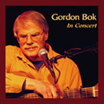

Reviews of Gordon Bok's Music
- Other Eyes
- Gordon Bok in Concert
- In the Kind Land
- Neighbors
- Harbors of Home
- Schooners
- Concert Reviews
- Quotable Reviews
- Support The Arts
In Concert
by Gordon Bok
THD-CD016, (c) (p) 2006
Review from The Boston Globe October 2006
Gordon Bok in Concert
The music of Maine folk singer Bok is like a universe unto itself, a roughhewn land filled with hardscrabble people, rascals in high places, and a natural world that is both cruel and kind, deadly and nurturing. On a long-awaited, fireside-friendly live album, Gordon Bok in Concert, he sings about mining disasters and drunken fisherman, the last dreams of drowning men, and the gentle sound of neighbors helping neighbors. His glorious bass-baritone is a bit more frayed now, like good leather softened from years of use. But that only makes his ballads more believable, as he roams the long trail of memory, from the wild and hurried passions of our youth, to the older joy that comes from knowing the real value of a quiet day.
by Scott Alarik, The Boston Globe